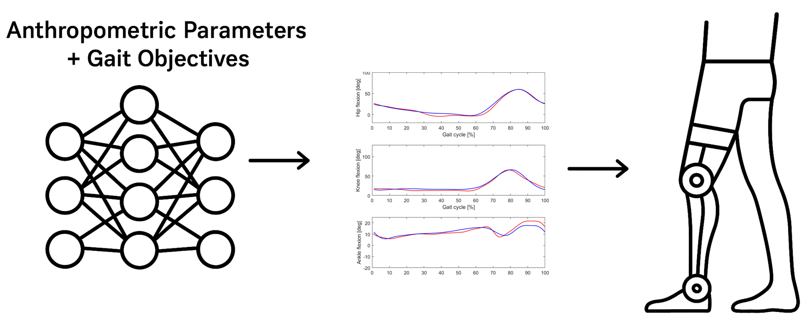

This project focuses on developing a Neural Network to generate gait kinematic trajectories based on anthropometric parameters (femur and tibia lengths, hip width) and gait objectives (step length and height). The trajectories are required for a robot to execute the desired gait cycle.
Traditionally, an algorithm computes 15 inflection points of normal joint trajectories and fits them with a spline function. However, each computation takes ~5 minutes, making it unsuitable for real-time applications. To address this, a Neural Network was designed and trained using pre-computed trajectories, enabling real-time performance.

Three architectures were initially considered: Multilayer Perceptron (MLP), Recurrent Neural Networks (RNNs), including advanced variants such as Long Short-Term Memory (LSTM) and Gated Recurrent Units (GRU), and Convolutional Neural Networks (CNNs). Since there is no temporal dependency or spatial structure in the input data, an MLP was selected.
The neural network is configured with five input neurons and thirty output neurons. Its configuration is tested for 2, 3, and 4 hidden layers trained for 250, 500, 7500, and 1000 epochs. Among them, the best results in terms of Mean Squared Error (MSE) were four hidden layers comprising 32, 64, 128, and 256 neurons, respectively, being the network trained over 750 epochs.
class MLP(nn.Module):
def __init__(self):
super(MLP, self).__init__()
self.model = nn.Sequential(
nn.Linear(5, 32), # Input layer
nn.ReLU(), # Non-linear activation function
nn.Linear(32, 64), # Hidden layer
nn.ReLU(),
nn.Linear(64, 128), # Hidden layer
nn.ReLU(),
nn.Linear(128, 256), # Hidden layer
nn.ReLU(),
nn.Linear(256, 30) # Output layer
)
def forward(self, x):
return self.model(x)
modelo = MLP()
criterio = nn.MSELoss() # MSE = Mean Squared Error
optimizador = optim.Adam(modelo.parameters(), lr=0.001) # Learning rate
data_raw.csv) contained irrelevant columns, which were removed.data_complete.csv) has:
data_train.csv, data_valid.csv, data_test.csvTraining and validation sets were imported into Python, split into batches of 32, and fed into the MLP. Validation RMSE was monitored during training to ensure error reduction and avoid overfitting.
train_dataset = MiDataset("data_train.csv")
valid_dataset = MiDataset("data_valid.csv")
train_loader = DataLoader(train_dataset, batch_size=32, shuffle=True)
valid_loader = DataLoader(valid_dataset, batch_size=32, shuffle=False)
The test dataset was used to compute RMSE for both gait-phase coordinates (%) and joint angles (°).
Results:
The reduced dataset provided similar performance with cleaner inputs. Increasing dataset size further did not yield significant improvements.
Finally, one example of the tested trajectories is shown in the image below (red:reference, blue:output).